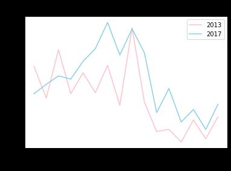

1. 계획서
1) 프로젝트명 : 2013년, 2017년 학생 건강 체력 평가를 통한 청소년의 건강 변화

2) 프로젝트 활용할 데이터 정보   

데이터 출처
1 교육부_학생건강체력평가결과(초중고)_2013
교육부(https://www.data.go.kr/data/3058878/fileData.do#layer_data_infomation)

2 학생건강체력평가제 결과(2017)
교육부(https://www.data.go.kr/data/3058878/fileData.do#layer_data_infomation)

3) 프로젝트 취지
교육과 관련지을 수 있는 데이터 통계를 찾던 도중 교육부에서 제공하는 데이터셋을 찾을 수 있게 되었다. 본래 학교 학생수 통계를 통해 데이터 분석을 하고자 했으나 해당 데이터가 분석하기에 깔끔하지 않은 데이터라고 판단되어 학생의 건강 체력과 관련하여 데이터 분석을 하게 되었다. 2013년과 2017년 두 해의 학생 건강 체력 결과를 비교하여 시대적으로 청소년의 건강 변화에 대하여 분석하게 되었다.

4) 통계 처리, 시각화 계획
처음엔 2013년 학생 건강 체력 평가 결과값을 가지고 데이터를 분석하려고 했으나 2017년의 데이터값을 같이 비교하는 프로젝트를 하게 되어 두 CSV 파일을 병합해야하였다. 파일 전처리 과정에서 2017년에는 전국 수치가 없어서 2013년 파일의 전국 수치를 제거하고, 2013년 값에 2017년의 값을 추가하여 새로운 CSV 파일을 제작하여 데이터 분석에 활용하였다.
2013년과 2017년의 세종시 건강체력평가 결과를 먼저 뽑아낸 후 1등급 비율의 값을 뽑아낸다. 2013년과 2017년 각각의 값을 꺾은선 그래프로 시각화하여 해당 데이터를 분석한다.

5) 예상되는 데이터 분석 결과
세종시 내에서 학생 건강 체력을 분석했을 때, 먼저 2013년과 2017년을 비교하였을 때 2013년보다 2017년에 1등급 비율이 낮을 것이라고 생각한다. 정보화 사회에 따른 청소년의 기초 체력이 낮을 것이라고 예상되어 2013년보다 2017년의 학생 건강 체력의 1등급 비율이 낮을 것이라고 생각하였다. 또한 나이로 보았을 땐 2013년과 2017년 모두 초중등 학년보다 고등학생의 1등급 비율이 더 낮을 것 같다. 그 이유는 고등학생은 평균적인 운동 시간이 짧을 것이라 생각하기 때문이다. 또한 여성보다는 남성의 건강 체력에서 1등급의 비율이 더 높을 것이라고 예상한다.


2. 보고서



1) 데이터 간 상관관계 분석
2013년과 2017년의 학생 건강 체력을 비교하여 보니 예상과는 다르게 2017년의 학생 건강 체력의 1등급 비율이 더 높은 경향을 나타내었다. 2013년보다 2017년의 1등급 비율이 더
낮을 것이라고 예상했던 결과가 나오지 않아 이유를 분석해보았는데 첫 번째 이유는 2013년이 세종특별자치시로 출범된 지 얼마 되지 않은 기간이라 학생 수가 많지 않아 결과에
영향을 주었을 수도 있었을 것 같다는 가설이다.
두 번째로는 단순히 2013년보다 2017년의 청소년 기초 체력이 더 높을 수도 있다는 가설이다. 정확히 분석하기 위해서는 전국적인 비율을 비교하여야 알 수 있을 것 같다. 또한 학년별 건강 체력 1등급의 비율 분석은 예상과 비슷한 결과를 가지게 되었다. Grade&Gender(학년&성별)에서 0-1은 초5, 2-3은 초6, …, 14-15는 고3의 학년분포를 가지는데 그래프를 보면 알 수 있듯이 전학년에 비교하여 고등학생의 1등급 비율이 낮은 것을 알 수 있다. 그리고 2013년에는 중등 3학년 남성에서 11.4%의 비율로 가장 높았고, 2017년에는 중등 2학년 남성에서 11.9% 중등 3학년 남성에서 11.3%로 높은 비율을 나타냈다. 따라서 중등에서 학생 건강 체력의 1등급이 많은 것을 알 수 있다. 또한 성별에 따른 분포를 확인해보았을 때, Grade&Gender(학년&성별)에서 짝수 번호(0,2,….)는 남성, 홀수 번호(1,3,….)는 여성이다. 2013년과 2017년에서 여성의 1등급 비율이 남성의 1등급 비율보다 낮은 것을 확인할 수 있는데, 고등학년에서는 여성의 1등급 비율이 남성의 1등급 비율보다 높은 것을 확인할 수 있었다. 개인적인 의견으로 고등학생의 남성보다 여성의 1등급이 더 높은 이유를 생각해보았는데, 학생 건강 체력 평가에서 1등급을 매기는 기준이 나이가 높아질수록 그 기준이 점점 상향화되어간다. 이것을 영향으로 생각하여 남성의 1등급 기준점이 높아 기초 체력이 여성보다는 높지만 기준점에 도달하지 못해 1등급을 하지 못한 것이 아닐까 싶다. 상관관계를 분석하고 그에 상응하는 결과를 분석하기 위해서는 다양한 등급의 분포도와 다양한 년도의 결과값을 가지고 광범위하게 분석을 해야겠다고 생각이 들었다. 지역별로 비교하지 못한 점도 아쉽게 생각하여 다음 데이터 분석에서는 조금 더 큰 데이터 범위로 분석을 해야겠다는 생각이 들었다. 또한 데이터 분석을 하면서 어려웠던 점은 2013년 학생 건강 체력 평가에서는 초등학교 5학년 학생부터 평가를 하였는데, 2017년에는 초등학교 4학년 학생부터 건강 체력 평가를 진행하여 초등학교 4학년의 결과값을 제거하는 작업을 진행해야 했는데 특정 행 제거 문법을 이용했을 때 문법 오류나, 원하는 결과값이 나오지 않아 데이터 분석을 하지 못할 수도 있었는데 drop 또는 or 문법으로 해결할 수 있게 되었다.

2) 분석 결과가 활용될 수 있는 분야와 그 근거 제시
내가 분석한 결과가 교육 분야에서 문제점을 인식하고 개선해나가야 하는 부분에서 활용될 수 있을 것이라고 생각이 들었다. 그 이유는 분석한 결과에 따르면 비록 세종시 내에 한해서 결과가 분석되었지만, 전체 데이터에 따르면 전국적으로 고등학생의 학생 건강 체력이 낮다는 것을 알 수 있다. 그러나 고등학교 3학년의 체육시간은 겨우 주당 1시간이 있는 것이 흔한 일인데, 오래 앉아서 공부하는 고등학생에게 기초 체력을 기본적으로 쌓아왔던 학생이 아니라면 1등급을 받기 힘든 것도 마찬가지이고 기초 체력이 낮은 학생들이 많다. 따라서 교육부에서 해당 문제를 인식하고 고등학생을 위한 기초체력 향상에 신경을 조금만 더 써준다면 청소년 교육에 있어 학습 능력의 질이 향상될 수 있는 기대를 가질 수 있다고 생각한다. 

